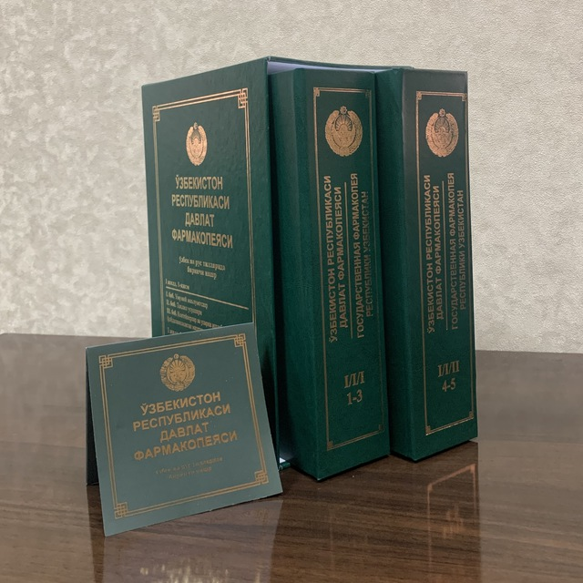
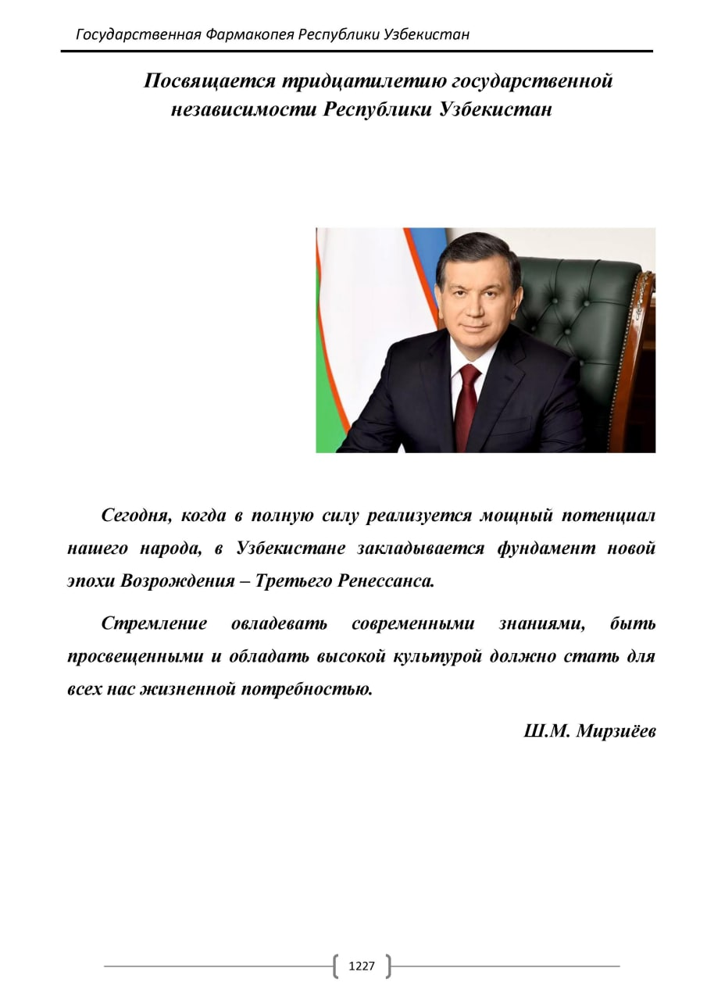
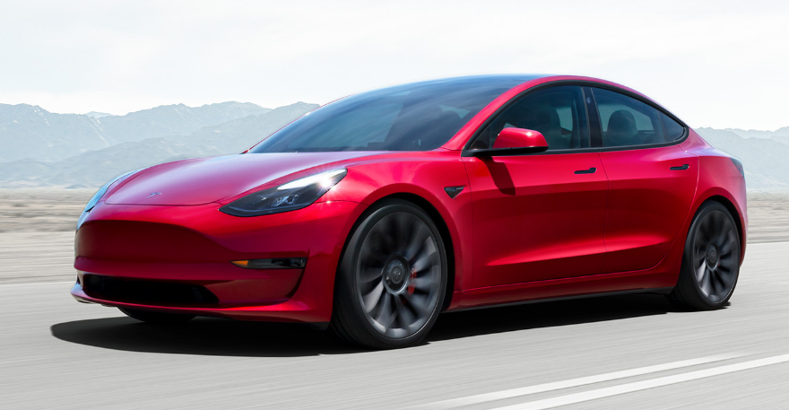

Государственная фармакопея — официальное издание, являющееся сборником документов, содержащих требования к лекарственным средствам и изделиям медицинского назначения, общие фармакопейные статьи, фармакопейные статьи и методы контроля качества лекарственных средств и изделий медицинского назначения.
Общая фармакопейная статья устанавливает общие требования к качеству лекарственных средств, изделий медицинского назначения, лекарственному растительному сырью, методам контроля их качества, стандартным образцам, реактивам, используемым при контроле качества лекарственных средств, упаковочным материалам, используемым в производстве лекарственных средств.
Фармакопейная статья устанавливает требования к качеству определенного лекарственного средства, изделия медицинского назначения, лекарственного растительного сырья, вспомогательного вещества.
Разработка общих фармакопейных статей, фармакопейных статей и включение их в Государственную фармакопею осуществляются в порядке, установленном Фармакопейным комитетом. Фармакопейный комитет является официальным экспертным органом Министерства здравоохранения Республики Узбекистан.
Государственная фармакопея издается Министерством здравоохранения Республики Узбекистан не реже одного раза в пять лет. В период между переизданиями Государственной фармакопеи издаются приложения к Государственной фармакопее.
 Компания была основана в июле 2003 года Мартином Эберхардом[en] и Марком Тарпеннингом, но нынешнее руководство компании называет сооснователями Илона Маска, Джеффри Брайана Страубела и Иэна Райта[14][15].
В 2019 году Tesla стала крупнейшим производителем электромобилей в мире[16]. Седан Tesla Model 3 стал самым продаваемым электромобилем в истории, преодолев отметку 800 тысяч[17].
В 2021 году Tesla вышла на первое место по капитализации среди автомобильных компаний, обойдя японского автопроизводителя Toyota[18]. В конце октября 2021 года капитализация Tesla впервые превысила 1 трлн долларов, ранее этой отметки достигали только 4 американские компании (Apple, Microsoft, Amazon и Alphabet)[19].
Названа в честь всемирно известного электротехника и физика Николы Теслы[17].
Компания Tesla (основанная как Tesla Motors) была зарегистрирована 1 июля 2003 года Мартином Эберхардом и Марком Тарпеннингом. Ян Райт был третьим сотрудником Tesla, присоединившимся к ней несколько месяцев спустя. В феврале 2004 года трое основателей привлекли инвестиции в размере 7,5 млн долларов США, при этом Илон Маск внес 6,5 млн долларов. Маск стал председателем совета директоров и назначил Эберхарда генеральным директором.
 Model S (Tesla)
Second page
Model S (Tesla)
Second page